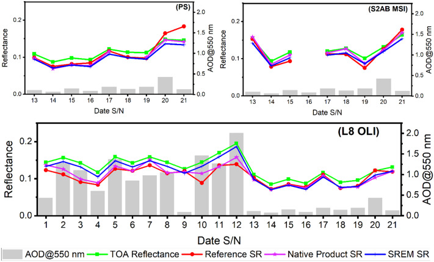
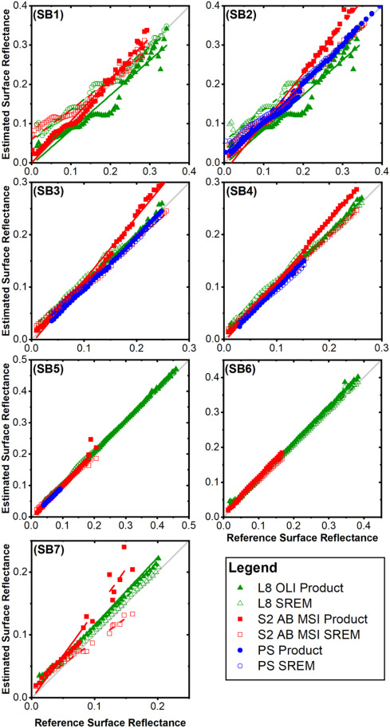

4 Week 3 Corrections
4.1 Summary
This week focused on the preprocessing of remote sensing imagery.
Satellite images are usually not ready to be analysed directly as raw data.
This is because imagery may be affected by several factors, including:
- sensor design
- scanning method
- atmospheric conditions
- terrain effects
- radiometric variation
Therefore, different forms of correction and enhancement are needed to improve:
- spatial accuracy
- radiometric comparability
- interpretability
4.1.1 Corrections
4.1.1.1 Geometric correction
Geometric correction is used to reduce spatial distortion in imagery.
Its main purpose is to ensure that image pixels correspond more accurately to their true ground locations.
Important concepts introduced this week included:
- GCPs (ground control points)
- transformation models
- RMSE
- resampling
One important point for me was that remote sensing imagery is not automatically positionally accurate.
This becomes especially important when remote sensing data need to be aligned with GIS layers for mapping or overlay analysis.
4.1.1.2 Atmospheric correction
Atmospheric correction is used to reduce the effects of the atmosphere on remotely sensed imagery.
The main issues include:
- scattering
- haze
- absorption
These factors can:
- alter spectral values
- reduce the comparability of images acquired on different dates
This is particularly important for:
- multi-temporal comparison
- vegetation indices
- environmental monitoring
4.1.1.3 Topographic correction / Orthorectification
Topographic correction and orthorectification are used to address problems caused by terrain and viewing geometry.
Key factors include:
- slope
- aspect
- solar angle
- digital elevation models (DEMs)
- sensor geometry
A key point is that in uneven terrain, the same land-cover type may appear differently because of differences in illumination.
Both the position and the brightness of image features can be influenced by topography.
4.1.1.4 Radiometric calibration
Radiometric calibration helps explain the difference between raw image values and more physically meaningful measurements.
Key factors included:
- DN
- radiance
- reflectance
A raw pixel value is only a numerical record, rather than a direct representation of true surface properties.
Calibration is an important step in making remotely sensed imagery more physically meaningful.
4.1.2 Mosaicking and enhancement
Mosaicking is used to combine multiple image scenes, but it is more complex than a simple merge.
It may require:
- overlapping areas
- histogram matching
- feathering
Remote sensing mosaics require both visual consistency and radiometric consistency.
The enhancement methods introduced this week included:
- contrast stretching
- band ratioing
- NDVI
- PCA
4.2 Application
An effective way to understand the role of correction procedures is to examine how they are applied in published remote sensing studies.
4.2.1 Geometric correction
Geometric correction is widely regarded as a prerequisite for multi-source data integration in GIS. Raw remote sensing imagery often contains geometric distortions, which prevent accurate registration, comparison, and integration with other spatial datasets. To address this, image data and metadata are typically combined with ground control points and digital elevation models (DEMs), followed by geometric correction and orthorectification to transform the imagery into a map coordinate system. This process produces orthorectified images that can be reliably integrated with other geospatial datasets, making it a fundamental step in multi-source and multi-format data fusion within GIS (Toutin, 2011). In this context, correction is not merely about improving image quality, but about enabling subsequent spatial analysis, comparison, and information extraction.
4.2.2 Spectral calibration
Spectral calibration provides another example of how correction techniques are embedded within research design. Guanter et al. (2007) demonstrate how spectral and atmospheric correction can be applied to derive and evaluate surface reflectance maps, column water vapour (CWV), aerosol optical thickness (AOT), and updated sensor gain coefficients. Using an improved MODTRAN4-based workflow, these corrections were applied to high-resolution hyperspectral data from the CASI-1500 sensor. Because the study relies on accurate reflectance retrieval rather than raw radiance measurements, correction is not treated as a separate preprocessing step, but as an integral component of the analytical framework.

4.2.3 atmospheric correction
Atmospheric correction is also applied in more comparative and operational contexts. Nazeer et al. (2021) evaluated the simplified empirical reflectance method (SREM) across PlanetScope, Sentinel-2, and Landsat-8 imagery under varying atmospheric conditions, with the aim of testing whether reliable surface reflectance could be retrieved without requiring aerosol optical thickness, water vapour, or ozone as auxiliary inputs. In this case, correction supports cross-sensor consistency and more robust environmental interpretation, particularly when working across datasets with different spatial resolutions and atmospheric characteristics. Overall, these studies demonstrate that different correction approaches serve distinct research purposes: geometric correction facilitates spatial integration, while atmospheric and spectral correction underpin physically meaningful comparison and interpretation.

4.3 Reflection
This week clarified why correction is essential prior to any further analysis in remote sensing. Correction enhances the usability of remotely sensed data, particularly when images need to be compared across different dates, aligned with GIS layers, or interpreted in a more physically meaningful way. Its importance is reflected in the fact that many downstream outputs, such as NDVI, classification, and change detection, depend on whether the imagery has been appropriately corrected.
At the same time, correction is not a fixed or uniform procedure, nor is it applied in the same way across all studies. Different types of correction are selected according to specific research objectives. Geometric correction is fundamental in studies that require precise spatial alignment and integration with GIS datasets. In contrast, atmospheric and spectral correction are more critical when the aim is to obtain reliable surface reflectance or to compare imagery across time and between different sensors.
Correction should not be viewed as a straightforward or complete solution. Its primary strength lies in improving spatial accuracy, comparability, and interpretability, thereby making remote sensing analysis more robust. However, an important limitation is that correction itself involves assumptions, model choices, and data requirements. For instance, geometric correction depends on the quality of control points and the transformation method used, while atmospheric correction may rely on how atmospheric conditions are estimated. As a result, correction does not produce a “perfect” image; rather, it reduces certain sources of error while still leaving room for uncertainty.
Finally, the material covered this week was conceptually more challenging than that of the previous week. While individual terms are relatively manageable, fully understanding how geometric correction, atmospheric correction, orthorectification, and radiometric calibration interact within a complete workflow requires further familiarity. Overall, this week has reshaped my understanding of remote sensing. It is no longer simply about working with images, but about analysing spatial data that has been carefully processed and prepared.